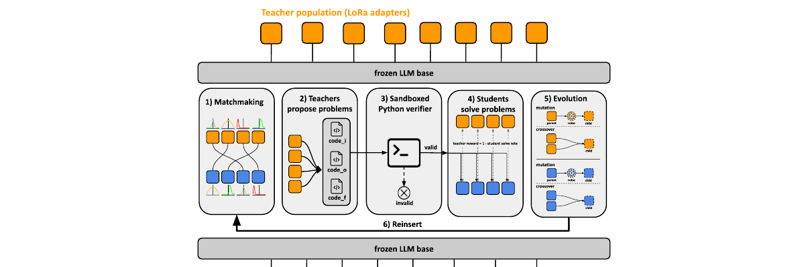

Blog

September 2026
I let GPT-6 Astra run its own research. It beat Craftax and reached the bottom of NetHack.
For three weeks, GPT-6 Astra read its own failed games, rewrote the prompts, tools and memory of the Astra agents that were playing, and launched new games to test each idea. One of its players defeated the Necromancer in Craftax; another performed the invocation and entered Moloch's Sanctum in NetHack.
Read the post
May 2026 · Vmax blog
PopuLoRA: Co-Evolving LLM Populations for Reasoning Self-Play
Single-agent self-play collapses onto tasks the model can already solve. PopuLoRA splits task generation and solving across co-evolving populations of LoRA teachers and students, turning self-play into an arms race whose curriculum keeps expanding.
Read the post